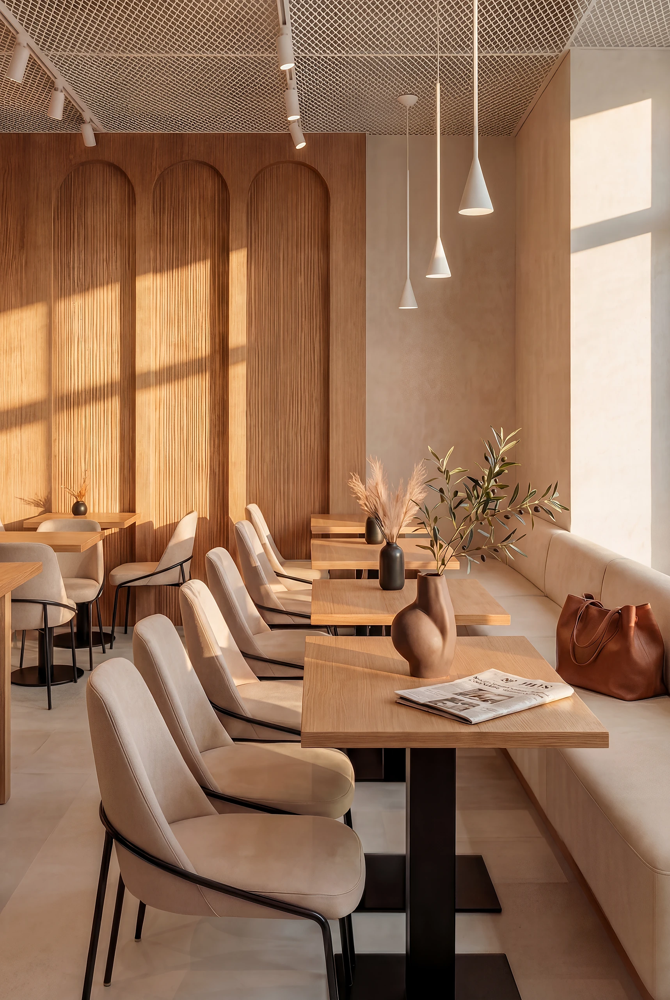

Πώς να ανοίξεις εστιατόριο στην Αθήνα
Το άνοιγμα ενός εστιατορίου δεν ξεκινά από το μενού ούτε από τα έπιπλα. Ξεκινά από μια καθαρή απόφαση για το τι είναι ο χώρος και για ποιον.

Τα περισσότερα εστιατόρια δεν αποτυγχάνουν στο φαγητό. Αποτυγχάνουν στις αποφάσεις πριν το άνοιγμα.
Η σειρά των αποφάσεων μετράει όσο και οι ίδιες οι αποφάσεις.
Το άνοιγμα ενός εστιατορίου στην Αθήνα είναι μια σειρά από αποφάσεις που εξαρτώνται η μία από την άλλη. Το concept ορίζει τον χώρο, ο χώρος ορίζει τις άδειες και το budget, και το brand με το website φέρνουν τον πρώτο πελάτη. Όταν αυτά μπαίνουν σε λάθος σειρά, χάνεται χρόνος και χρήμα.
Concept πριν το concept
Πριν το ύφος, χρειάζεται καθαρή εικόνα για το κοινό, τη μέση απόδειξη, τις ώρες αιχμής και τον τύπο service. Ένα all day, ένα fine dining και ένα wine bar είναι διαφορετικές επιχειρήσεις με διαφορετικές ανάγκες χώρου.
Χώρος, άδειες και budget
Η επιλογή και η ανακαίνιση του χώρου κρίνουν το μεγαλύτερο μέρος του κόστους. Άδειες, μηχανολογικά, εξαερισμός και υγειονομικό πρέπει να ελεγχθούν νωρίς, πριν κλειδώσει μια εικόνα που δεν υλοποιείται.
Brand και website από την αρχή
Το εστιατόριο δεν ανοίγει όταν μπει το τελευταίο φωτιστικό. Ανοίγει όταν ο πελάτης το βρίσκει, το καταλαβαίνει και αποφασίζει να έρθει. Το naming, το μενού, οι φωτογραφίες και το website σχεδιάζονται παράλληλα με τον χώρο.
Ο σωστός χώρος με λάθος concept αποτυγχάνει. Το σωστό concept σε λάθος χώρο κοστίζει διπλά.
Άδειες λειτουργίας και υγειονομικό
Πέρα από την αδειοδότηση του κτιρίου, η λειτουργία εστιατορίου απαιτεί γνωστοποίηση λειτουργίας, τήρηση υγειονομικών όρων και μέτρα πυρασφάλειας. Οι απαιτήσεις εξαρτώνται από τον τύπο της επιχείρησης και τον χώρο, γι' αυτό είναι καλύτερα να ελεγχθούν νωρίς, μαζί με τη μελέτη, ώστε ο σχεδιασμός να μη συγκρούεται με τους κανόνες.
Χρονοδιάγραμμα μέχρι το άνοιγμα
Ένα ρεαλιστικό χρονοδιάγραμμα μετρά αντίστροφα από την ημερομηνία ανοίγματος: concept και brand, μελέτες και άδειες, εργοτάξιο, εξοπλισμός, προσωπικό και δοκιμαστική λειτουργία. Οι περισσότερες καθυστερήσεις έρχονται από εγκρίσεις και προμήθειες. Ένα σαφές πλάνο με μία ομάδα μειώνει το ρίσκο να ανοίξει ο χώρος αργότερα από ό,τι επιτρέπει το budget.
01 ConceptΚοινό, service, μέση απόδειξη, ώρες αιχμής.
02 ΧώροςΕπιλογή, ροή, άδειες, μηχανολογικά.
03 BudgetΡεαλιστικό κόστος και απόθεμα.
04 LaunchBrand, μενού, φωτογραφία, website.
Συχνές ερωτήσεις
Τι χρειάζεται πρώτο για να ανοίξω εστιατόριο;
Πρώτα ένα καθαρό concept: για ποιον είναι, τι service, τι μέση απόδειξη. Όλα τα υπόλοιπα, χώρος, budget, άδειες και brand, ακολουθούν αυτή την απόφαση.
Πόσο κοστίζει το άνοιγμα ενός εστιατορίου;
Εξαρτάται από τον χώρο, τα μηχανολογικά και το επίπεδο. Το μεγαλύτερο μέρος πάει σε υποδομές που δεν φαίνονται. Ένας σωστός προϋπολογισμός ξεκινά από το concept και τον χώρο.
Μπορείτε να αναλάβετε χώρο, brand και website μαζί;
Ναι. Είναι το ιδανικό για ένα άνοιγμα, γιατί όλα λένε την ίδια ιστορία από την πρώτη μέρα και μειώνονται τα κενά ανάμεσα σε συνεργεία και προμηθευτές.